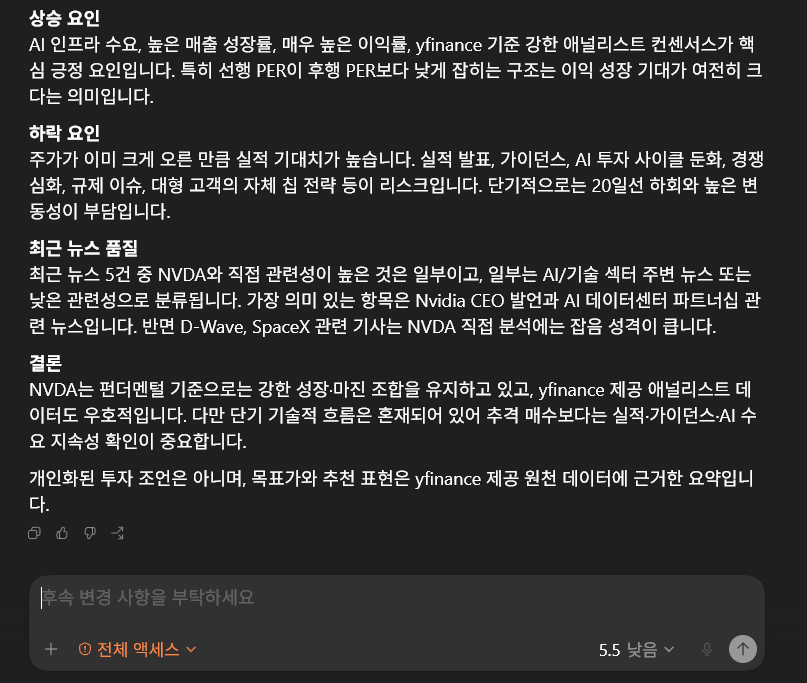
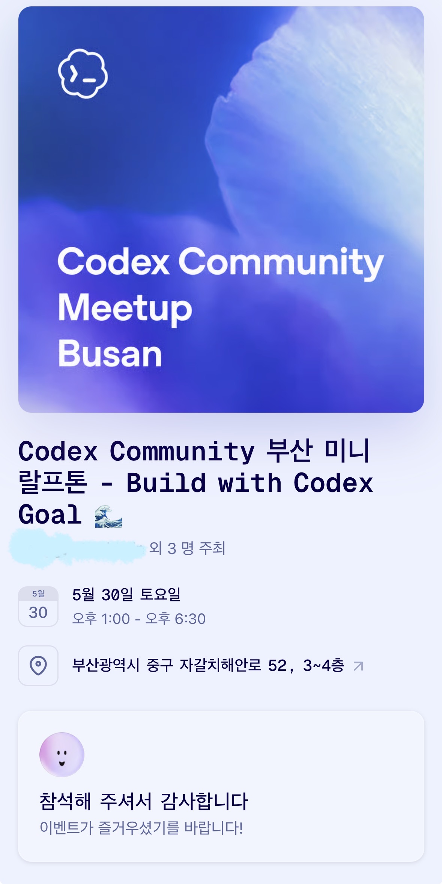

Mini Ralfthon
Nasdaq 종목 데이터를 수집해 기술 지표, 재무 요약, 뉴스 흐름을 Markdown/JSON 리서치 메모로
정리하는 Codex Plugin MVP입니다.



프로젝트 소개
Mini Ralfthon은 부산 미니 랄프톤에서 제작한 Codex Plugin MVP입니다. Codex Goal 기능을 이용해 목표와 완료 기준을 세우고, AI와 함께 Nasdaq 리서치 메모 생성 흐름을 끝까지 구현하는 방식으로 진행했습니다. Nasdaq 종목 하나를 입력하면 가격 데이터, 기술적 지표, 재무 요약, 최근 뉴스 정보를 모아 참고용 리서치 메모를 Markdown과 JSON 산출물로 생성합니다.
투자 판단을 대신하는 도구가 아니라, 흩어진 정보를 빠르게 모으고 리포트 초안을 정리하는 실험용 도구로 설계했습니다. 출력 문구에는 투자 권유처럼 보일 수 있는 표현을 피하고, 정보 제공용 메모라는 경계를 유지하도록 했습니다.
참가 맥락
Mini Ralfthon은 Goal 기능을 중심으로 AI를 적극 활용해 개발 목표를 달성해보는 개발 행사였습니다. 제한된 시간 안에서 목표, 제약 조건, 검증 기준을 먼저 정하고, Codex와 작업을 나누며 MVP를 완성하는 방식으로 진행했습니다.
입력 범위, 데이터 수집, 리포트 포맷, 안전 문구 같은 경계를 먼저 정한 뒤, 실행 결과가 Markdown 리포트와 JSON 데이터로 남도록 구성했습니다. 최종적으로 deterministic test, lint, type-check, CLI smoke, 출력 검증을 묶은 verify 스크립트까지 통과시키는 것을 완료 기준으로 삼았습니다.
핵심 기능
- Nasdaq 종목 티커 입력 기반 리서치 메모 생성
- yfinance 기반 가격 데이터와 주요 요약 필드 수집
- 기술적 스냅샷, 재무 요약, 최근 뉴스 항목을 하나의 문서로 정리
- Markdown 리포트와 JSON 데이터 산출물 생성
- 투자 추천처럼 보일 수 있는 표현을 제한하는 안전 문구 가드레일 적용
설계 포인트
제한된 입력 범위
초기 MVP에서는 입력 종목 범위를 좁혀 데이터 수집 실패와 예외 상황을 줄이고, 리포트 품질을 먼저 확인했습니다.
산출물 중심 구조
실행 결과를 Markdown과 JSON으로 남겨, 사람이 읽는 보고서와 후속 자동화에 쓸 수 있는 데이터를 함께 확보했습니다.
정보 제공 경계
금융 도메인의 민감도를 고려해 매수/매도 판단 대신 참고용 리서치 메모 생성이라는 목적을 분명히 했습니다.
Codex Plugin 실험
단순 스크립트 실행을 넘어, Codex가 재사용할 수 있는 플러그인 형태로 명령, 문서, 검증 흐름을 묶었습니다.
NVDA 분석 메모 예시
기준 데이터
기준 데이터: 로컬 CLI python -m src.main NVDA 실행 결과
기준일: 가격은 2026-06-03, 데이터 수집 시각은 2026-06-04
NVDA는 여전히 “성장성과 마진은 매우 강하지만, 단기 주가는 식는 중”으로 보는 게 가장 깔끔합니다. 최근 종가는 214.75달러이고, 전일 대비 -3.62% 하락했습니다. 다만 분석 기간 기준 수익률은 +51.32%로 강한 상승 추세를 이미 반영하고 있습니다.
핵심 판단
NVDA의 투자 논점은 AI 반도체 수요와 높은 수익성이 현재 밸류에이션을 계속 정당화할 수 있느냐입니다. yfinance 요약 필드 기준 매출 성장률은 85.2%, 순이익률은 62.97%로 매우 강합니다. 부채비율도 6.555로 낮은 편이라 재무 레버리지 부담은 제한적으로 보입니다.
밸류에이션은 후행 PER 32.89배, 선행 PER 17.00배입니다. 선행 PER이 후행 PER보다 낮다는 점은 시장이 향후 이익 증가를 크게 반영하고 있음을 시사합니다. 즉, 비싸 보이지만 이익 성장 기대가 강하게 깔려 있는 구조입니다.
애널리스트 컨센서스
yfinance 제공 요약 필드 기준:
- 평균 목표가: 298.07달러
- 고가 목표가: 500.00달러
- 저가 목표가: 180.00달러
- 추천 키워드: strong_buy
- 애널리스트 수: 58명
- 평균 목표가와 최근 종가 간 괴리: +38.80%
이 목표가와 추천은 제가 만든 전망이 아니라 yfinance 원천 데이터에 있는 값입니다.
기술적 흐름
단기 모멘텀은 혼재되어 있습니다.
- 20일 이동평균: 218.88달러
- 50일 이동평균: 202.05달러
- RSI 14: 41.65
- 20일 연율화 변동성: 44.68%
현재가는 20일선 아래지만 50일선 위입니다. 그래서 단기 조정은 진행 중이나, 중기 추세는 아직 완전히 훼손됐다고 보기 어렵습니다. RSI도 과매도권은 아니어서 “싸졌다”기보다는 “강한 상승 후 쉬는 구간”에 가깝습니다.
상승 요인
AI 인프라 수요, 높은 매출 성장률, 매우 높은 이익률, yfinance 기준 강한 애널리스트 컨센서스가 핵심 긍정 요인입니다. 특히 선행 PER이 후행 PER보다 낮게 잡히는 구조는 이익 성장 기대가 여전히 크다는 의미입니다.
하락 요인
주가가 이미 크게 오른 만큼 실적 기대치가 높습니다. 실적 발표, 가이던스, AI 투자 사이클 둔화, 경쟁 심화, 규제 이슈, 대형 고객의 자체 칩 전략 등이 리스크입니다. 단기적으로는 20일선 하회와 높은 변동성이 부담입니다.
최근 뉴스 품질
최근 뉴스 5건 중 NVDA와 직접 관련성이 높은 것은 일부이고, 일부는 AI/기술 섹터 주변 뉴스 또는 낮은 관련성으로 분류됩니다. 가장 의미 있는 항목은 Nvidia CEO 발언과 AI 데이터센터 파트너십 관련 뉴스입니다. 반면 D-Wave, SpaceX 관련 기사는 NVDA 직접 분석에는 잡음 성격이 큽니다.
결론
NVDA는 펀더멘털 기준으로는 강한 성장·마진 조합을 유지하고 있고, yfinance 제공 애널리스트 데이터도 우호적입니다. 다만 단기 기술적 흐름은 혼재되어 있어 추격 매수보다는 실적·가이던스·AI 수요 지속성 확인이 중요합니다.
개인화된 투자 조언은 아니며, 목표가와 추천 표현은 yfinance 제공 원천 데이터에 근거한 요약입니다.
사용 기술
랄프톤 회고
이번 랄프톤에서는 아이디어를 크게 벌리기보다, 한 종목 입력에서 Markdown/JSON 산출물 생성까지 이어지는 좁은 흐름을 끝까지 닫는 데 집중했습니다. 현재 Nasdaq 상장 심볼 검증, yfinance 데이터 수집, 기술 지표 계산, 뉴스 중요도 분류, 데이터 품질 점수까지 연결하면서 Codex가 반복해서 사용할 수 있는 플러그인 형태로 정리할 수 있었습니다.
가장 크게 배운 점은 AI를 많이 쓰더라도 목표와 경계가 먼저 정리되어 있어야 결과물이 흔들리지 않는다는 점입니다. Goal에 완료 조건을 두고 테스트와 검증 스크립트까지 같이 맞추니, 짧은 시간 안에서도 15개 deterministic test와 verify 흐름을 통과하는 MVP로 마무리할 수 있었습니다.
금융 데이터를 다루는 프로젝트라 표현의 경계도 중요했습니다. 목표가, 추천 키워드, 애널리스트 수 같은 값은 yfinance 원천 데이터에서 온 정보로 분리하고, 결과물은 투자 조언이 아니라 참고용 리서치 메모라는 점을 명확히 남겼습니다.